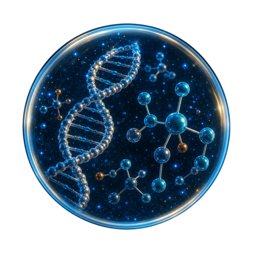
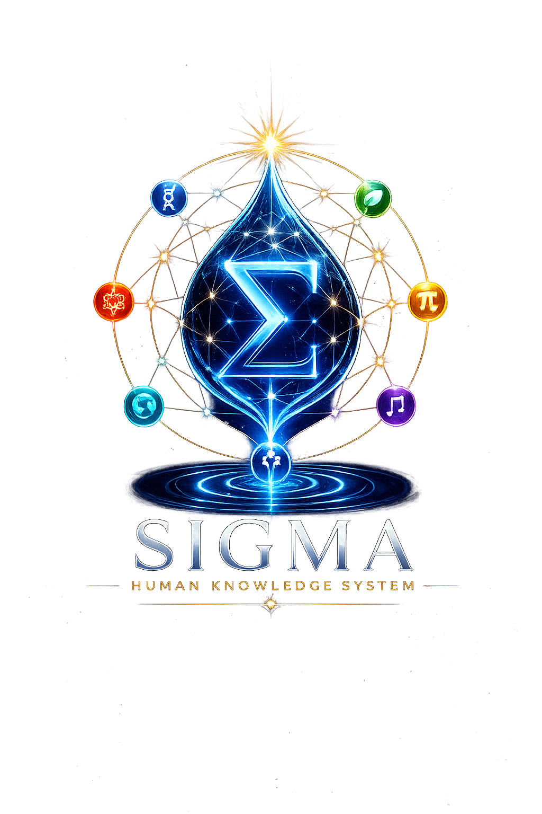
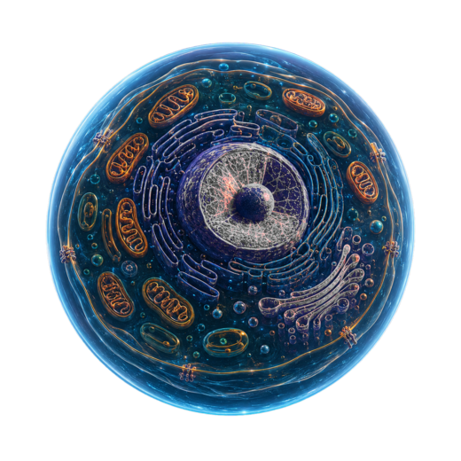
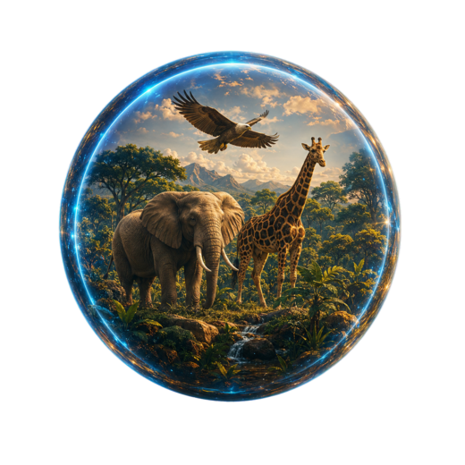
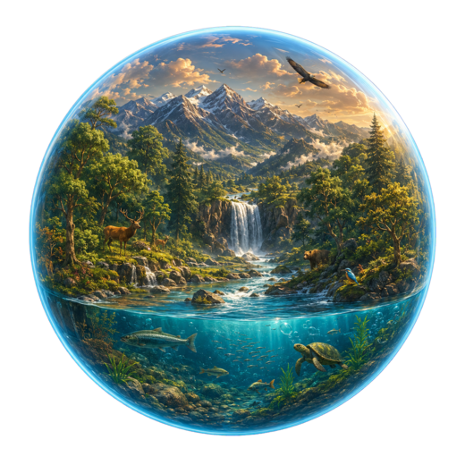
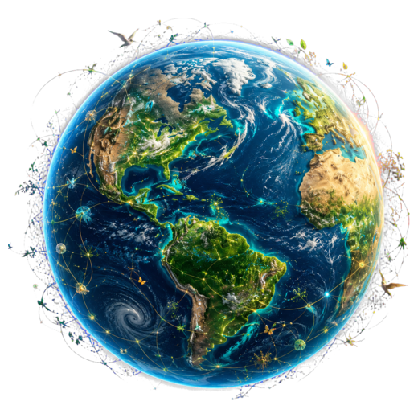

01Molecules
Atoms bond into water, proteins, lipids, carbohydrates and nucleic acids—the material language of life.

SIGMA BIOLOGY Explore BiologyTHE LIVING UNIVERSE
Travel from molecules to the biosphere. Discover how structure, function, interaction and transformation connect every level of life.
THE SCALE OF LIFE
Follow biological organization across five connected scales. Each new level creates properties that cannot be understood by studying its parts alone.

01Atoms bond into water, proteins, lipids, carbohydrates and nucleic acids—the material language of life.

02Membranes organize chemistry into the smallest systems able to maintain and reproduce life.

03Specialized cells cooperate in tissues, organs and systems to form an integrated individual.

04Communities interact with air, water and soil while energy flows and matter cycles.

05Every ecosystem connects into Earth’s thin, dynamic and shared living layer.
IB DP BIOLOGY • SL / HL
Choose a chapter to enter its cinematic lessons, Knowledge DNA, practical work and exam mastery. New chapters unlock as production is completed.
What separates living systems from non-living matter?
The molecular properties that make life possible.
How internal organization creates cellular function.
Controlling exchange across dynamic boundaries.
How cells control linked chemical reactions.
Releasing usable energy from organic molecules.
Transforming light into stored chemical energy.
Preserving biological information through time.
From genetic code to functional protein.
Growth, repair and the continuity of cells.
Predicting how traits move across generations.
How populations change and diversity emerges.
Patterns of abundance, interaction and coexistence.
Food webs, productivity and nutrient cycles.
Evidence-based choices for a changing planet.
Maintaining stability through communication and control.
Defense, recognition and the biology of health.
Creating a new organism from cells and information.